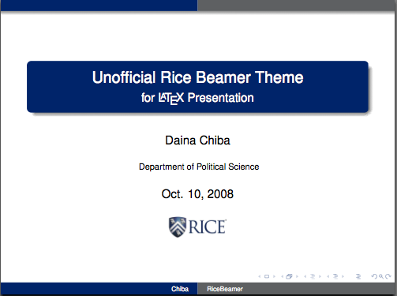
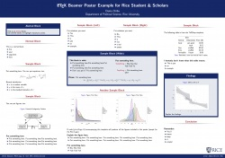

Introduction

LATEX is a typesetting system designed for scientific documentation. It can also be used as a powerful tool to create high quality presentation slides and conference posters. This page provides templates and style files I created for Rice students and scholars.
Disclaimer
I wrote these files primarily for my personal use when I was a graduate student at Rice.
Although I have made every effort to ensure that these style files satisfy the Identity Standards of Rice University described in
this document, the files introduced here are not the official products of Rice University.
All the files are under development, and your feedback is much appreciated
(daina.chiba@gmail.com).
RiceBeamer
Beamer is a class of LATEX system files for producing presentation slides and conference posters.
I created a new set of Beamer theme files for Rice University, which can also be used along with many standard Beamer themes.
The RiceBeamer style consists of two main theme files — color theme (colorthemericeowl.sty) and outer theme (beamerthemeRice.sty).
You can download an archived package that contains the above two files and an example presentation (.tex and .pdf).
Download
| File |
|
Description |
| RiceBeamer.zip(ver.0.02, 360 KB) |
|
This is an archived package that contains the following two style files, the logo, and an example presentation (source and pdf). |
| beamercolorthemericeowl.sty |
color theme (RiceOwl) |
This provides official -Rice Blue-
and -Rice Gray- (as defined in
Rice University Identity Standards (pdf)), along with other colors and styles.
This color theme can be used individually, or combined with the standard theme files (such as
Warsaw theme), but it is primarily designed for use with the Rice Beamer style, introduced below. |
| beamerthemeRice.sty |
outer theme (RiceBeamer) |
A new Beamer theme that is based on the popular Warsaw theme.
It comes with a header at the top of each slide showing the current section / subsection, and
a footer showing the author and title.
This theme requires the Rice Owl color theme file, along with an outer theme file
(beamerouterthemerice.sty),
and a Rice logo (small logo (24 KB)). |
Installation
To install, download and decompress the files into a direcotry where your LATEX system can find a path to, and then rehash the path.
(If you don't know what I am talking about, just place all the files in the same folder.)
For a Mac OS X machine, something like the following should work:
/usr/local/texlive/2008/texmf/tex/latex/
It is likely that this directory (/usr/...) is invisible from you. If so, (1) choose Finder application, (2) Press Shift+Command+G, and a new window whould appear, and then (3) type the above path (/usr/local/texlive/...) into the window.
Then, you need to rehash the path. Open a Terminal application (Applications/Utilities/Terminal.app), and type in :
sudo mktexlsr
For a Windows machine, something like the following should work:
c:/localtexmf/tex/latex/beamer/themes/theme
c:/localtexmf/tex/latex/beamer/themes/color
c:/localtexmf/tex/latex/beamer/themes/outer
Then, you need to texhas (or ls-R) so that
LATEX can find the path. For example, if you use MikTeX on Windows, go to the settings menu, choose the general tab, and click on "Refresh FNDB".
Again, if you cannot complete any of the above procedures, you may place the style files
in the same folder in which your presentation .tex file is located.
Updates
- ver 0.02 (11/23/2008)
More options now available. See header.
- ver 0.01 (10/10/2008)
Users can decide whether or not to show the RICE word mark in each slide.
It can be placed in the header (top-right), footer (bottom-left), or both.
For example, if you want it in the header, use ricet
option in the preamble. See the example file sources for more detail.
Other Resources
RicePoster

Beamer can also be used to produce posters for academic presentations.
Drawing on the style files and examples that other people have created, I made an example poster
for Rice students & scholars. This poster is best viewed if printed on an A0 size paper.
You may find the following pages useful to know more about Beamer poster:
Download
You can download an archived directory that contains everything.
{kind=link}